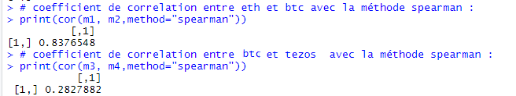

Présentation
Le 9 janvier 2009 le Bitcoin a vu le jour, au depart une simple expérimentation dont
la valeur initiale unitaire pouvait être considérée comme insignifiante, aujord'hui
il est sujet a spéculation de la part de personne de tout horizons, aussi bien des
entités physiques que morales comme des entreprises. Même des pays comme le Salvadore
ont fait le pari du Bitcoin avec plus ou moins de succès.
Losque le Bitcoin a été intoduit sa valeur unitaire sa valeur unitaire était de 0,001 $ mais suite aux
années et à la spéculation sa valeur a explosé. Le même Bitcoin qui valait en 2009 0,001 $ a une valeur
aujord'hui de 44.143,98 $ (09/02/2022). Alors quels ont été les évolutions de sa valeur au cours du temps,
en quelle année sa valeur à vraiment explosé ?
A travers une étude statistique on va repondre à ces questions.
Notre équipe
Notre équipe est composé de moi-même Ivo COSTA CUNHA, Prince Divin MACKPAYEN
, Ewen HANNI et Axel JEAN PETEZ.
Je me suis moi-même occupé de la rédaction de cette page ainsi que du code R qui a servi à analyser les données.
Prince était reponsable de la décoration de cette page et a également participé au code R.
Ewen a participé au code R et a été reponsable du script de présentation du projet.
Axel a participé principalement au code R.
Les données utilisées
On a utilisé un ensemble de données qui se trouve sur le site Kaggle. Kaggle propose après une inscription un
accès à des données open source qui peuvent être utilisés dans n'importe quel projet.
Nous avons utilisé le dataset suivant https://www.kaggle.com/jessevent/all-crypto-currencies.
Nous avons utilisé un dataset qui présente l'évolution de toutes les crypto-currencies à travers
les données suivantes :
Le prix à l'ouverture des marchés "#open"
Le prix le plus haut atteint sur la période "#high"
Le prix le plus bas atteint sur la periode "#low"
Le prix a la fermeture des marchés "#close"
Le volume échangé sur la période "#volume
Les données sont présentés pour toutes les crypto-currencies existantes au moment de la prise des donnés,
et pour chaque jour. Les données existent du 24/08/2013 au 30/11/2018.
Nous avons utilisé le language R qui est spécialé dans l'analyse de données à travers des facilités est
des fonctions interressantes "build-in", avec son meilleur ID trouvable
RStudio qui facilite l'affichage des données et le codage en général.
La méthodologie utilisée
La méthodologie utilisée pour notre travail au niveau de l'équipe est le scrum agile, c'est une méthode agile de gestion de projets
informatiques privilégiant la communication, et facilitant les réorientations opportunes, mieux adapté
pour notre équipe et le temps qui nous était imparti, nous avons mis en place plusieurs sprints et un système
rotatif des tâches où chacun des membres de l'équipe pouvait passé de la veille à la conception et les tests
sur différents systèmes d'exploitation.
Nous avons utilisé GitHub pour stocker les données de notre projet en ligne et afin de pouvoir en gérer le
differentes version.
Voici notre GitHub pour ce projet :
lien Github.
Les résultats obtenus
Tout d'abord il est important de noter que notre étude commence en 2016 où le prix du Bitcoin a déja
fortement augmenté par rapport a son prix à sa conception. 2016 est aussi l'année ou le Bitcoin à connu
son grand boom au niveau de la valeur ce qui a généré une certaine "hype" pour celui-ci.
En noir sont les données de 2016 à 2018 et en gris celles de 2018 à 2019.
Quand on compare les données il n'y a pas d'erreur possible.
Le cours minimum moyen à plus que triplé de la période 2016-2018 à la période 2018-2019 avec des valeurs
respectives de environ 2186$ à 7691$ environ. Le cours maximum moyen à également suivi la même progression
avec en 2016-2018 une valeur moyenne de 2360$ à 8147$ en 2018-2019. On y voit non seulement une nette progression
mais aussi que l'écard en le minimum et le maximum à augmenté, peut être une hausse de la spéculation.
On pourrait y voir seulement une augmentation de la valeur du Bitcoin dû à la spéculation, mais le Bitcoin est-il aussi
plus utilisé en général ?
Bien les statistiques montent que oui. On est passé de 1.234.463.716 transactions moyennes par jour sur la période de
2016 à 2018 à 6.108.525.649 sur la période de 2018 à 2019, une progression de plus de 500%.
Donc le Bitcoin est bien à la fois plus utilisé et à une valeur plus forte. Mais qu'en est-t'il des autres crypto-monnaies ?
S'agit t'il d'un phenomère reduit au Bitcoin ou tout les crypto-monnaies sont affectés ?
Dans ces images représentant le pourcentage (%) représenté de toutes les transactions faites en moyenne sur le périodes mentionnées.
Le Bitcoin est représenté en orange et toutes les autres crypto-monnaies en jaune.
On voit donc que le Bitcoin représentait sur la période de 2016 à 2018 42,63% de toutes les transactions contre
57,36% pour toutes les autres crypto-monnaies. On en déduit donc que le Bitcoin bien que majoritaire n'était pas seul
sur le marché même si il avait la position majoritaire. On voit que en en 2018-2019 le Bitcoin perd des parts
de marché avec pour lui 33,53% et pour le reste des crypto-monnaies 66,47%. On y voit donc un déclin du Bitcoin.
Cependant comme le marché a gagné en valeur malgré le déclin le Bitcoin est plus fort sur la second période que la première.
Le test de corrélation est utilisé pour évaluer une association (dépendance) entre deux variables.
Le calcul du coefficient de corrélation peut être effectué en utilisant différentes méthodes.
Il existe la corrélation r de pearson, la corrélation tau de Kendall et le coefficient de corrélation rho de Spearman..
Nous avons calculé le coefficient de corrélation de plusieurs devises selon plusieurs méthodes pour comparer.
Test de corrélmation du Bitcoin avec l'Ethereum et du Bitcoin le tezos selon la méthode de Kenbdall.
Test de corrélmation du Bitcoin avec l'Ethereum et du Bitcoin le tezos selon la méthode de Spearman.

Test de corrélmation du Bitcoin avec l'Ethereum et du Bitcoin le tezos selon la méthode de Pearson.